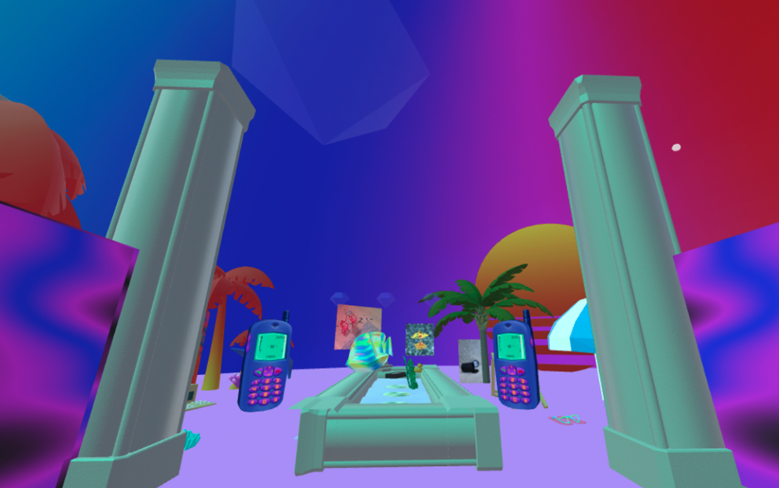
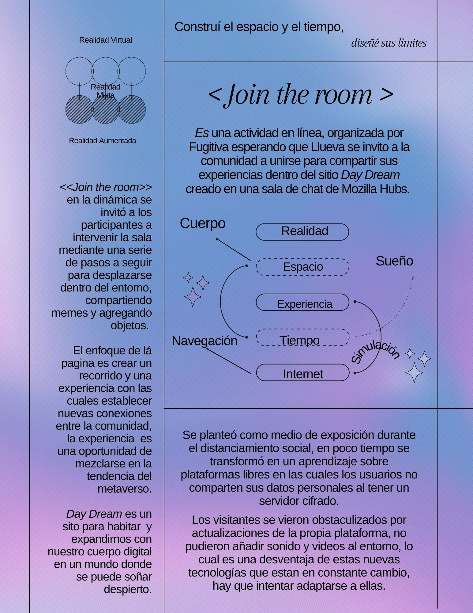

✧ 𝓓𝓪𝔂 𝓓𝓻𝓮𝓪𝓶 ✧ 𝟚𝟘𝟚𝟙
IR
Dentro de internet se han gestado galerÃas de arte y artistas se han mudado a plataformas que les permite mostrar exposiciones online, buscando incrementar el acceso del público sin salir de casa, la plataforma LocalHost Gallery de Drew Niknowicz existe completamente dentro del popular juego de minecraft, cualquiera con una copia puede acceder a la galerÃa, este espacio es creado como una oportunidad para disfrutar el trabajo de otras personas. Como una alternativa de consumo en un lugar donde no abundan los museos y galerÃas, hay que entender que este proyecto es pre pandémico aunque sus lógicas nos ayudan a sostener estas nuevas formas de producir en futuros posibles. Una alternativa a la situación actual para compartir mi trabajo y experimentar con nuevas materialidades, ocupando el ocio para dar lugar a arquitecturas digitales, dando lugar a otras experiencias para dar salida a obras y conectar con personas del medio en una situación de distanciamiento.
Join the room Lo que me hizo llevar mi proyecto a la configuración de una página plataforma Mozilla Hubs fue que me permite conservar y divulgar las piezas, es una nueva vinculación con los multiversos que surgen fuera de lo fÃsico, con la realidad mixta se nos abren nuevos espacios virtuales donde podemos interactuar con discursos como el cuerpo dentro de la pantalla, desde el papel de espectador, en el que se nos muestra una parte del proyecto, es una serie de collages y composiciones digitales animadas con narraciones individuales.
Es asà cómo nace DayDream es un espacio de realidad mixta para reunir comunidades en un espacio virtual compartiendo de manera libre, en esta sala de chat se pretende mostrar las piezas resultado de la investigación de las coaliciones entre los conceptos espacio, tiempo, percepción y realidad, que llevo desarrollando desde el 2018 con distintas técnicas de producción ahora con un giro hacia la investigación de la participación del público, espectador o usuario.


Day dream o soñar despierto es un concepto que utilizo para anteponer al público lo que sucederá en la actividad, el mundo en el que nos adentramos sucede estando despierto en una mezcla de realidad virtual, realidad aumentada en un encuentro con el mundo “real”, el visitante se adentra a mi subconsciente habita en el sueño que fabriqué con la intención de que interactúe, cree e imagine formando conexiones con sus propias experiencias.
En la dinámica de mediación los usuarios con una serie de instrucciones construyeron puentes entre diferentes realidades, habitando el espacio con el cuerpo digital Con el motivo de adentrarse al sueño despierto y expandir nuestro cuerpo digital en un espacio seguro.

Una de las ventajas de la plataforma es el poder acceder de forma libre y segura, sin intermediarios que lucran con nuestros datos, una de las ventajas de hacer un exposición virtual es el poder alcanzar más audiencia, en este sitio se puede desplazarse y apropiarse del lugar, cosa que no pasarÃa en un museo fÃsico, la exhibición se nos muestra de manera gratuita, si tenemos acceso a internet y un dispositivo,desde el discurso curatorial se nos detona otra manera de gestionar espacios para exhibiciones y desarrollo de proyectos que de otra forma no podrÃamos llevar a acabo, por cuestiones de distancias, financieras, podemos dejar un poco más a la imaginación, hasta en un momento una de mis intenciones es intentar romper las plataformas para asà exigir nuevos implementos o inclusive comenzar a desenmascarar las tecnologÃas que en un futuro que queremos acceder. Las dificultades y obstáculos al montar una exhibición en lÃnea son muchos, uno de los problemas a los que me enfrente fue a la obsolescencia y desempate de compatibilidad de archivos con la salida del mercado de Google Poly que sirvió cómo un repositorio de archivos en 3D especialmente en formato de bajos en polÃgonos (Low poly).
El dÃa 25 de Febrero se llevó a cabo la muestra del proyecto en la GalerÃa de pequeño formato en la Facultad de Artes de la UAEMéx con el motivo de que el proyecta salga un poco de su esencia virtual para presentarse a un público más extenso y sea reflexionado fuera de la pantalla, se realizó la activación de la sala de chat bajo la dinámica << join the room>> es un recorrido guiado a través de una serie de pautas que ayudarán al visitante a recorrer y reflexionar sobre nuestros efectos e interacciones en internet, haciendo un poco visible nuestro cuerpo digital al añadir elementos propios cómo imágenes, memes con los que se sientan representados, empalmando su vida real y su vida virtual.
